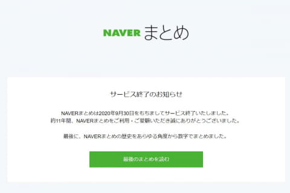
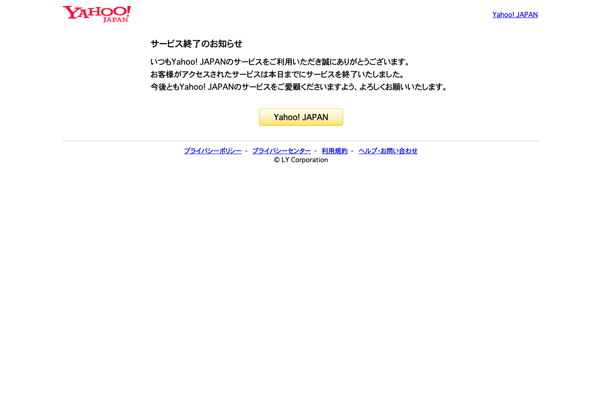
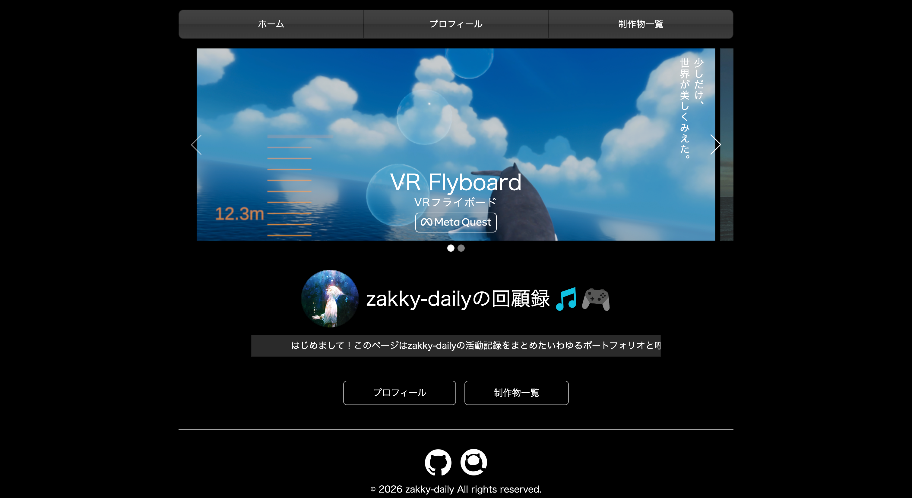
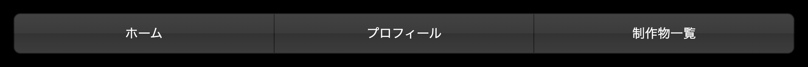
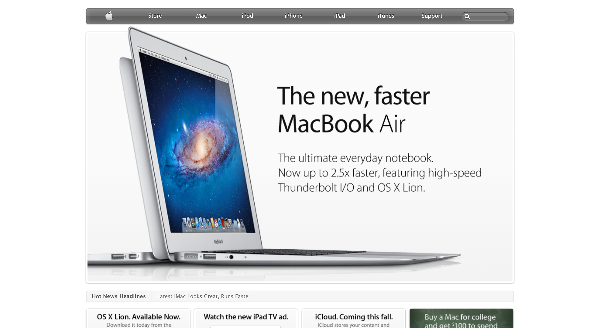

成果物はこのホームページ自体です。
様々なコンテンツがありますので、是非いろいろなページを見て回ってください。


僕が初めてインターネットに触れた2012〜2013年（小学1,2年生くらい）には沢山存在していた
個人ブログの数々も、時代の流れとともにサ終、閲覧不可能に。
なにより悲しかったのは、個性溢れていたデザイン自体が、TwitterやInstagramで画一的になってしまったことだった。
私は当時のインターネットの景色が少し懐かくなって、自分の好きなようにデザインを決められるマイページで、少し雰囲気を寄せてみようと思ったのだった。

ホーム画面の上半分を占めるカルーセルで、自身の最新作や自信作を視覚的に訴えかけるようにしました。
marquee、懐かしいね。

ヘッダーのこの立体感。かっこよくない？

本ウェブサイトのデザインは、2010年頃のApple HPと、映画「告白」に出てくるあのブログの映像に主に影響を受けてます。
丁度このサイトを作り始めたタイミングで映画を観直して（2回目）、その時にデザインの方向性を決めたという経緯も。
ポートフォリオとしての機能と、自分のやりたいデザインとの両立が結構難しかったのですが、ある程度達成できたのかなとは思ってます。
＊
追記。cssのflexは2012年登場だから、この時代ではまだほとんどのブラウザには普及していません。
だけどこのサイトではめちゃくちゃ使ってます……だって便利すぎるんだもん!!